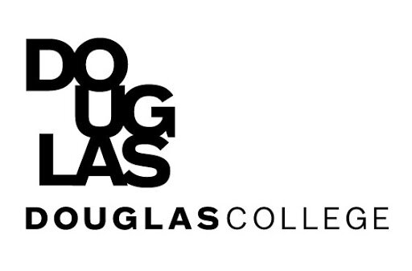

Background
I studied in Digital media convergence management in Korea, so I am very interested in the IT field.
I'm majoring in Data analytics in Computer and information systems at Douglas College in Canada.
Goals
I would like to master the process of building web sites and increase my knowledge, skills and abilities in:
- HTML/CSS
- Busienss statistic
- JavaScript
- Data Analytics
- Python
I will be learning business statistic and support systems, data analysis and more about Computer and Information Systems. In my first year at Douglas College, I will be introduced to basic computing and programming, and become familiar with current development tools. In my second year, I will hone my skills, specializing in Data Analytics. I will become having the skills to work in a variety of career opportunities in the growing information technology industry.
Hobbies

- Watching Netflix
- Playing Tennis
- Learning Languages